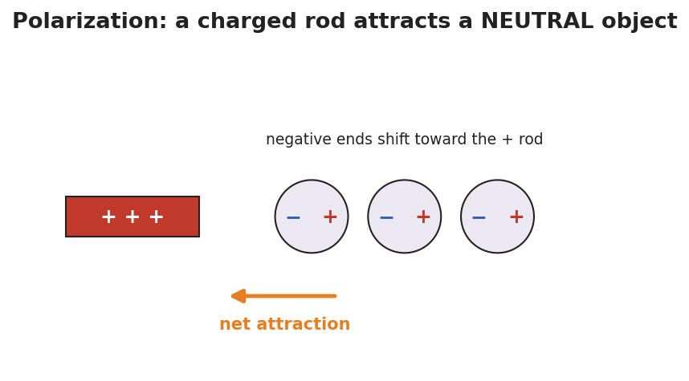
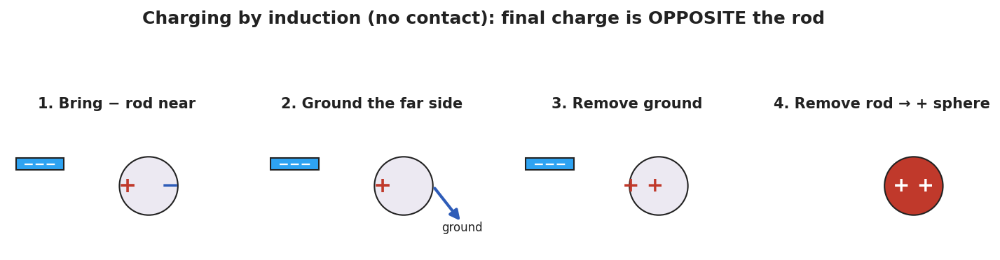

Unit: Electrostatics — Lesson 03: Charging by Induction and Polarization
Phenomenon
Your teacher holds a charged rod near a thin stream of water — the stream bends toward it. The rod never touches the water, and the water started out neutral. Held over tiny scraps of neutral paper, the rod makes them jump up to meet it.

Driving Question
How can a charged object pull on a neutral object it never even touches?
Notice & Wonder
Watch the rod attract neutral paper and bend neutral water. Write what you notice and what you wonder.
Initial Model
Draw a scrap of neutral paper with a charged rod held above it. Show what you think happens to the charges inside the paper. Predict whether the paper is pulled up, pushed down, or unaffected.
Investigate
Step through the BTC thin-slice task: leave a neutral sphere with a lasting charge using a negative rod you may not touch to it. Press Next step to advance: bring the rod near (polarize), ground the far side, remove the ground, then remove the rod. Watch what the sphere is left with.
Step 0 of 4: Neutral sphere on an insulating stand.

Make It Make Sense
- A charged rod attracts a neutral piece of paper. Explain what happens to the paper's charges (use the word polarization).
- A negative rod is used to charge a metal sphere by induction. What sign does the sphere end up with, and why?
- A student lets the rod touch the sphere instead. Now what charging method is it, and what sign does the sphere get?
Stuck? Sentence frame
"When the rod comes near, the ___ charges move to the ___ side, so the object becomes ___ (polarized / charged by induction)."
Key Vocabulary (max 3)
- polarization — the shift of charge within a neutral object when a charged object is brought near; the near side becomes oppositely charged, so the object is attracted (it stays overall neutral)
- induction — charging an object without contact by bringing a charge near, grounding, then removing the ground and the charge; the object is left with the opposite sign
- grounding — connecting an object to the Earth (or a large conductor) so charge can flow off to or from it
Revise Your Model
Return to your paper-bits drawing. Re-label it using polarization: which side of the paper is attracted, and why? Then write one sentence stating the final sign if you instead charged a metal sphere by induction with a positive rod.
Return to the Phenomenon
Why does the water stream bend toward either a positive or a negative rod? Predict in one sentence using polarization: water molecules are polar and rotate so their attracted end faces the rod, so the stream bends toward a rod of either sign.
Exit Ticket + Closing Reflection
- A positive rod is brought near (not touching) a neutral metal sphere on an insulating stand.
(a) Sketch where the + and − charges sit on the sphere while the rod is near. What is this called?
(b) You ground the sphere, remove the ground, then remove the rod. What sign is the sphere's net charge? Name the method.
(c) In one sentence, state the key difference between charging by induction and charging by conduction. - Reflection: Which groupmate's board move helped you see the grounding step? Name one idea you changed your mind about.